人工智能原理与技术课程设计 project1
2153067 王灏博
问题背景
问题的背景是吃豆人游戏，需要完成的目标分为使用不同的算法来找到目标的豆子，并且生成对应的路径。
这几种算法包括深度优先搜索(Depth First Search)、广度优先搜索(Breadth First Search)、
一致代价搜索(Uniform Cost Search)、和搜索(A Star Search)。
另外，需要对一些特定的问题构造状态空间、起始状态和目标状态，并完成一些函数来实现结点的扩展、
判断是否到达目标的方法(method)，另外，还需要完成一些启发式函数来匹配不同的问题。
Question 1
问题概述
问题1需要完成的任务是使用深度优先搜索算法(Depth First Search)找到通往目标状态的路径，以及所有
展开过的结点。
需要注意的地方有以下几点(前4个问题)：
a)对于一些问题，searchAgent已经完成了大部分的框架(比如问题的构建，移动的方式，子结点的展开方法)，
算法需要实现的内容就是完成一个动作序列来指导Agent来到达目的地。
b)返回的这个动作序列必须是合法的(如，['A->C','C->G']，而不能是['A->C','D->G'])
c)实验应当用到util.py中提供的一些数据结构，分别是栈(util.Stack)、队列(Queue)和优先队列(PriorityQueue)
d)问题1的算法和其他三个搜索算法的写法应该是十分类似的，从代码上看只是数据结构有所差别。
e)这个搜索算法不应当重复展开同一个结点。
f)对于问题的状态空间，每一个状态是一个三元组的形式表示，即(结束状态,动作,代价)
算法设计
用栈(util.Stack)的数据结构，先把初始状态结点压入栈，进入以下循环，直到栈空：
(1)弹出栈顶结点，检查其状态是否为目标状态，如果是，返回当前路径；如果不是，继续
(2)如果弹出结点已经访问过，回到(1)，否则，找到弹出结点的successors，
按照已提供的函数的默认顺序将他们依次加在当前路径的尾部，然后依次将这些新路径压入栈
(3)将刚才弹出结点加入到已访问结点
通过这样的循环找到了目标就直接在第(1)步返回了当前的路径，就完成了这个问题
算法实现
def depthFirstSearch(problem: SearchProblem): "*** YOUR CODE HERE ***" from game import Directions currentState=problem.getStartState() visitedStates=set() currentPaths=util.Stack() currentPaths.push([(currentState,'startState',0)]) if(problem.isGoalState(currentState)): return Directions.STOP while not currentPaths.isEmpty(): path=currentPaths.pop() currentState=path[-1][0] if currentState in visitedStates: continue visitedStates.add(currentState) if(problem.isGoalState(currentState)): break currentSuccessors=problem.getSuccessors(currentState) for action in currentSuccessors: if action[0] in visitedStates: continue newPath=path[:] newPath.append(action) currentPaths.push(newPath) finalPath=[x[1] for x in path[1:]] return finalPath util.raiseNotDefined()
实验结果
实验调试
实验过程中遇到的问题主要是语法错误，经常会将搞混什么时候用三元组列表，什么时候用三元组
通过解决这些问题，我对这次的问题结构有了更深刻的理解
下图为起始状态，注意要压栈一个含有初始状态的三元组列表，而不是一个三元组
下图为将整个三元组连接到路径，而不是只连接动作
下图为将路径的动作集合返回，但是不返回第一个，因为刚开始将初始状态压入栈，
所以第一个元素是初始状态，没有动作


实验完成
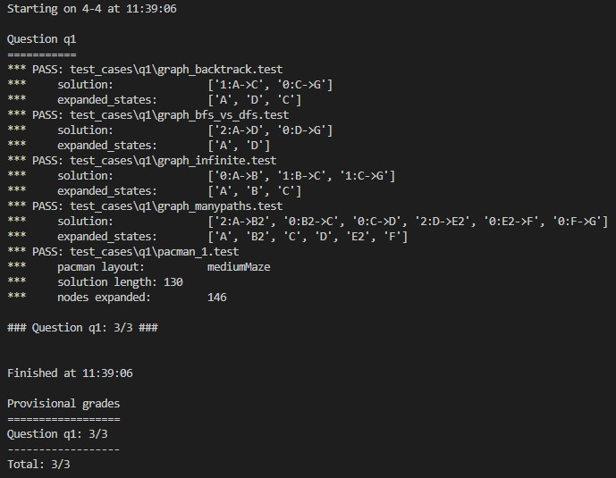Question 2
问题概述
问题2需要完成的任务是使用广度优先搜索算法(Breadth First Search)
找到通往目标状态的路径，以及所有展开过的结点。
需要注意的地方在第一题已经描述过，此处不再赘述。
算法设计
用队列(util.Queue)的数据结构，先把初始状态结点入队，进入以下循环，直到队空：
(1)弹出队首结点，检查其状态是否为目标状态，如果是，返回当前路径；如果不是，继续
(2)如果弹出结点已经访问过，回到(1)，否则，找到弹出结点的successors，
按照已提供的函数的默认顺序将他们依次加在当前路径的尾部，然后依次将这些新路径入队
(3)将刚才弹出结点加入到已访问结点
通过这样的循环找到了目标就直接在第(1)步返回了当前的路径，就完成了这个问题
算法实现
def breadthFirstSearch(problem: SearchProblem): """Search the shallowest nodes in the search tree first.""" "*** YOUR CODE HERE ***" from game import Directions currentState=problem.getStartState() visitedStates=set() currentPaths=util.Queue() currentPaths.push([(currentState,'startState',0)]) if(problem.isGoalState(currentState)): return Directions.STOP while not currentPaths.isEmpty(): path=currentPaths.pop() currentState=path[-1][0] if currentState in visitedStates: continue visitedStates.add(currentState) if(problem.isGoalState(currentState)): break currentSuccessors=problem.getSuccessors(currentState) for action in currentSuccessors: if action[0] in visitedStates: continue newPath=path[:] newPath.append(action) currentPaths.push(newPath) finalPath=[x[1] for x in path[1:]] return finalPath util.raiseNotDefined()
实验结果
实验调试
有了之前写深度优先搜索的经验，此次写广度优先算法只是将数据结构从Stack变成了Queue，即完成了这个问题
实验完成
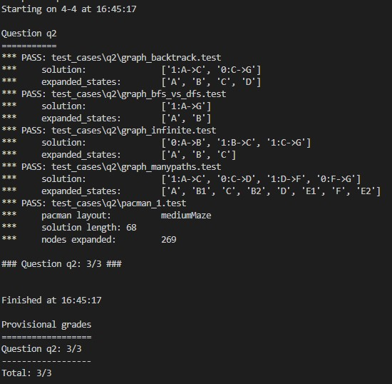Question 3
问题概述
问题3需要完成的任务是使用一致代价搜索算法(Uniform Cost Search)找到通往目标状态的路径，以及所有
展开过的结点。
需要注意的地方在第一题已经描述过，此处不再赘述。
算法设计
用优先队列(util.PriorityQueue)的数据结构，先把初始状态结点和默认初始代价0入队，
进入以下循环，直到队空：
(1)弹出队首结点，检查其状态是否为目标状态，如果是，返回当前路径；如果不是，继续
(2)如果弹出结点已经访问过，回到(1)，否则，找到弹出结点的successors，
按照已提供的函数的默认顺序将他们(包括已经历的实际代价与预估到终点的代价和)
依次加在当前路径的尾部，然后依次将这些新路径入队
(3)将刚才弹出结点加入到已访问结点
通过这样的循环找到了目标就直接在第(1)步返回了当前的路径，就完成了这个问题
算法实现
def uniformCostSearch(problem: SearchProblem): """Search the node of least total cost first.""" "*** YOUR CODE HERE ***" from game import Directions currentState=problem.getStartState() visitedStates=set() currentPaths=util.PriorityQueue() currentPaths.push([(currentState,'startState',0)],0) if(problem.isGoalState(currentState)): return Directions.STOP while not currentPaths.isEmpty(): path=currentPaths.pop() currentState=path[-1][0] if currentState in visitedStates: continue visitedStates.add(currentState) if(problem.isGoalState(currentState)): break currentActions=[x[1] for x in path[1:]] currentCost=problem.getCostOfActions(currentActions) currentSuccessors=problem.getSuccessors(currentState) for action in currentSuccessors: if action[0] in visitedStates: continue newPath=path[:] newPath.append(action) newCost=currentCost+action[2] currentPaths.push(newPath,newCost) finalPath=[x[1] for x in path[1:]] return finalPath util.raiseNotDefined()
实验结果
实验调试
此次写一致代价搜索只是将广度优先算法的数据结构从Queue变成了PriorityQueue，
但是需要注意一点，就是需要在初始状态和后续添加
路径的时候同时将代价也一并添加进去，并且此处的代价是之前所有
动作的代价总和(如下图所示)，这样就完成了这个问题
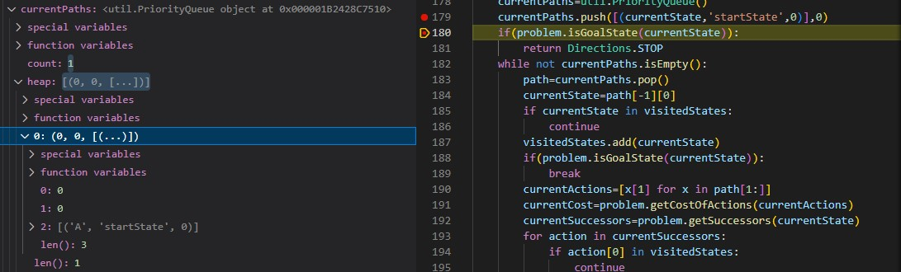
实验完成
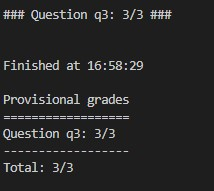Question 4
问题概述
问题4需要完成的任务是使用算法(A Star Search)找到通往目标状态的路径，以及所有
展开过的结点。
需要注意的地方在第一题已经描述过，此处不再赘述。
算法设计
用队列(util.PriorityQueue)的数据结构，先把初始状态结点和默认初始代价0入队，
进入以下循环，直到队空：
(1)弹出队首结点，检查其状态是否为目标状态，如果是，返回当前路径；如果不是，继续
(2)如果弹出结点已经访问过，回到(1)，否则，找到弹出结点的successors，
按照已提供的函数的默认顺序将他们(包括走过的代价和预估代价)
依次加在当前路径的尾部，然后依次将这些新路径入队
(3)将刚才弹出结点加入到已访问结点
通过这样的循环找到了目标就直接在第(1)步返回了当前的路径，就完成了这个问题
另外，预估代价的启发式函数已经在传入参数时给出，不需要在本题考虑。
算法实现
def aStarSearch(problem: SearchProblem, heuristic=nullHeuristic): """Search the node that has the lowest combined cost and heuristic first.""" "*** YOUR CODE HERE ***" from game import Directions currentState=problem.getStartState() visitedStates=set() currentPaths=util.PriorityQueue() currentPaths.push([(currentState,'startState',0)],0) if(problem.isGoalState(currentState)): return Directions.STOP while not currentPaths.isEmpty(): path=currentPaths.pop() currentState=path[-1][0] if currentState in visitedStates: continue visitedStates.add(currentState) if(problem.isGoalState(currentState)): break currentActions=[x[1] for x in path[1:]] currentCost=problem.getCostOfActions(currentActions) currentSuccessors=problem.getSuccessors(currentState) for action in currentSuccessors: if action[0] in visitedStates: continue newPath=path[:] newPath.append(action) newCost=currentCost+action[2]+heuristic(action[0],problem) currentPaths.push(newPath,newCost) finalPath=[x[1] for x in path[1:]] return finalPath util.raiseNotDefined()
实验结果
实验调试
此次写搜索算法只是将一致代价搜索算法的数据结构没有变，
都是PriorityQueue，但是需要注意一点，就是需要在初始状态和后续添加
路径的时候同时将代价也一并添加进去，并且此处的代价是之前所有
动作的代价和预估代价总和(如下图所示)，这样就完成了这个问题
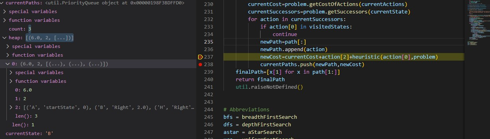
实验完成
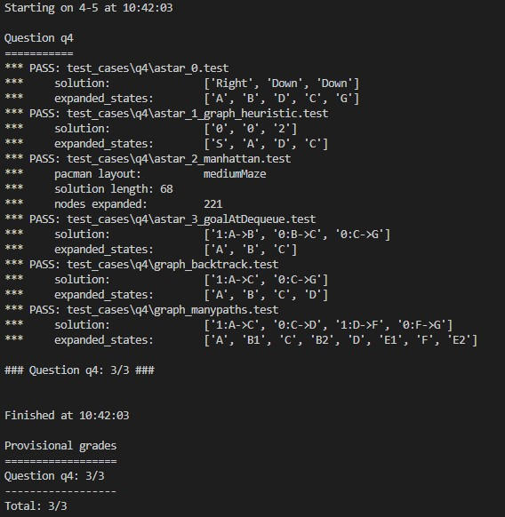Question 5
问题概述
问题5需要完成的任务是补全一个特定的问题，构造这个问题的状态空间，
即构造起始状态、终止状态以及返回每个结点的子结点的函数，通过构造
这样特定的问题理解search.py最上方的抽象类problem的运作原理，并
理解如何通过设计的这些算法来解决实际问题
其中大部分内容已经完成，需要填充的只有起始状态和终止状态，getSuccessors方法
isGoalState方法，如果说search.py完成的是Agent的内容，那么从此问题
开始就是完成Agent的框架
算法设计
首先要理解题目的用意，需要完成角落问题的构建，整体问题是，
给出初始位置和四个角落的坐标，构造状态空间、结点展开方法、
判断是否完成任务方法
通过分析可知，对于每一个状态，他有一个坐标，以及4个角落
是否经历过(可以视作4个子任务)
显然，如果pacman在经历到一个角落时已经经历过其他所有角落
判断目标完成所以使用一个五元组来完成__init__方法
(位置坐标,角落1是否被经历,角落2是否被经历,角落3是否被经历,角落4是否被经历)
来表示每个状态(如果用1表示经历过，0表示未经历过)
那么起始状态就是(起始坐标,0,0,0,0)，
结束状态集合就是{(角落1坐标,1,1,1,1),(角落2坐标,1,1,1,1),
(角落3坐标,1,1,1,1),(角落4坐标,1,1,1,1)}
如下图所示
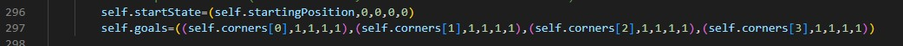getStartState方法和isGoalState方法也就可以很容易地完成
如下图所示
最后是getSuccessors方法
根据注释，我们可以看到作者已经很贴心地完成了是否撞墙的判断
以及下一步怎么走(通过这两个变量dx,dy)，
只需要考虑非撞墙情况下的变化
如果非撞墙，那么下一个坐标就是当前坐标加上改变量dx和dy
再判断下一个位置是不是角落，如果是任意一个角落，
将对应角落的值改为1，其他角落继承原来的状态
最后，由于是迷宫问题，每一步的代价都是1，所以设置单步代价
为1，构造一个三元组加入successors列表，返回这个列表
如下图所示
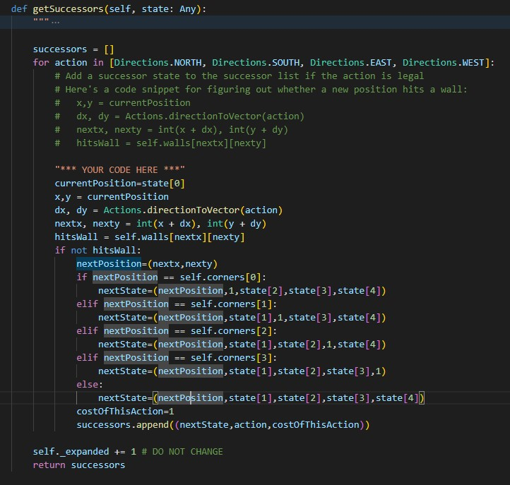

算法实现
class CornersProblem(search.SearchProblem): def __init__(self, startingGameState: pacman.GameState): """ Stores the walls, pacman's starting position and corners. """ self.walls = startingGameState.getWalls() self.startingPosition = startingGameState.getPacmanPosition() top, right = self.walls.height-2, self.walls.width-2 self.corners = ((1,1), (1,top), (right, 1), (right, top)) for corner in self.corners: if not startingGameState.hasFood(*corner): print('Warning: no food in corner ' + str(corner)) self._expanded = 0 # DO NOT CHANGE; Number of search nodes expanded # Please add any code here which you would like to use # in initializing the problem "*** YOUR CODE HERE ***" #This tuple refers to (currentPosition, whether i th corner is visited) self.startState=(self.startingPosition,0,0,0,0) self.goals=((self.corners[0],1,1,1,1),(self.corners[1],1,1,1,1),(self.corners[2],1,1,1,1),(self.corners[3],1,1,1,1)) def getStartState(self): """ Returns the start state (in your state space, not the full Pacman state space) """ "*** YOUR CODE HERE ***" return self.startState util.raiseNotDefined() def isGoalState(self, state: Any): """ Returns whether this search state is a goal state of the problem. """ "*** YOUR CODE HERE ***" if state in self.goals: return True return False util.raiseNotDefined() def getSuccessors(self, state: Any): """ Returns successor states, the actions they require, and a cost of 1. As noted in search.py: For a given state, this should return a list of triples, (successor, action, stepCost), where 'successor' is a successor to the current state, 'action' is the action required to get there, and 'stepCost' is the incremental cost of expanding to that successor """ successors = [] for action in [Directions.NORTH, Directions.SOUTH, Directions.EAST, Directions.WEST]: # Add a successor state to the successor list if the action is legal # Here's a code snippet for figuring out whether a new position hits a wall: # x,y = currentPosition # dx, dy = Actions.directionToVector(action) # nextx, nexty = int(x + dx), int(y + dy) # hitsWall = self.walls[nextx][nexty] "*** YOUR CODE HERE ***" currentPosition=state[0] x,y = currentPosition dx, dy = Actions.directionToVector(action) nextx, nexty = int(x + dx), int(y + dy) hitsWall = self.walls[nextx][nexty] if not hitsWall: nextPosition=(nextx,nexty) if nextPosition == self.corners[0]: nextState=(nextPosition,1,state[2],state[3],state[4]) elif nextPosition == self.corners[1]: nextState=(nextPosition,state[1],1,state[3],state[4]) elif nextPosition == self.corners[2]: nextState=(nextPosition,state[1],state[2],1,state[4]) elif nextPosition == self.corners[3]: nextState=(nextPosition,state[1],state[2],state[3],1) else: nextState=(nextPosition,state[1],state[2],state[3],state[4]) costOfThisAction=1 successors.append((nextState,action,costOfThisAction)) self._expanded += 1 # DO NOT CHANGE return successors def getCostOfActions(self, actions): """ Returns the cost of a particular sequence of actions. If those actions include an illegal move, return 999999. This is implemented for you. """ if actions == None: return 999999 x,y= self.startingPosition for action in actions: dx, dy = Actions.directionToVector(action) x, y = int(x + dx), int(y + dy) if self.walls[x][y]: return 999999 return len(actions)
实验结果
实验调试
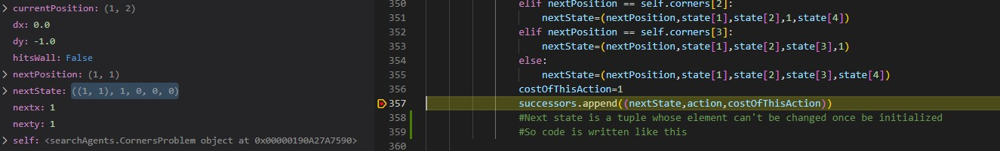因为是构造状态空间的问题，所以只需要想明白状态空间如何构造就可以
很容易地写出代码，唯一的问题就是在展开子结点的时候，
第一次写忽略了state作为一个五元组元素不可被更改的事情
所以导致语法错误，解决方法就是在初始化的时候赋一次值即可
如下图所示
实验完成
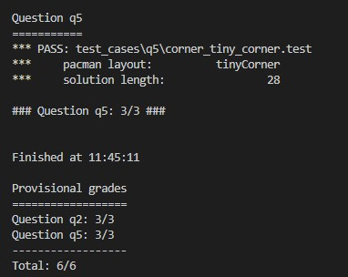Question 6
问题概述
问题6是对问题5的一个解决方案，问题5构造了一个角落问题
问题6需要用之前在问题4设计过的搜索算法来解决
问题5，但是缺少了启发式函数，那么本体的目标就是针对这
一问题设计一个启发式函数，来让搜索算法生效
算法设计
分析这样的一个角落问题，我们先考虑启发式函数的要求：
(1)当前状态到目标状态代价的估计值实际到目标状态的代价
(2)当前状态到目标状态代价的估计值
采取任意操作的实际代价+下一状态到目标状态代价的估计值经过一些思考后，发现当前位置到所有未访问过的
角落的曼哈顿距离中最大的曼哈顿距离比较符合
通过分析可知，无论往哪个方向走，到达未访问过
最远角落的曼哈顿距离最多减1，走一步代价也是1,
符合(2)
显然，到一个当前还未访问过的角落的曼哈顿距离
不大于走完所有角落的总代价，符合(1)
所以当前位置到所有未访问过的 角落的曼哈顿距离
中最大的曼哈顿距离估计比较接近实际距离
算法实现
def cornersHeuristic(state: Any, problem: CornersProblem): corners = problem.corners # These are the corner coordinates walls = problem.walls # These are the walls of the maze, as a Grid (game.py) "*** YOUR CODE HERE ***" currentPosition=state[0] maxManhattanDistance=0 for i in range(0,4): if state[i+1]==0:#judge whether the corner is visited goal=corners[i] manhattanDistanceTemp=abs(currentPosition[0]-goal[0])+abs(currentPosition[1]-goal[1]) if manhattanDistanceTemp>maxManhattanDistance: maxManhattanDistance=manhattanDistanceTemp return maxManhattanDistance#The farest corner will finally be visited, so return the maximum of the distances return 0 # Default to trivial solution
实验结果
实验调试
需要注意这个启发式函数要找的目标是到所有未经历过
的角落的曼哈顿距离的最大值，而不是所有角落，
一开始忽略了这一个问题，就导致多展开了许多节点
加入一个判断条件就可以避免这一问题
如下图所示
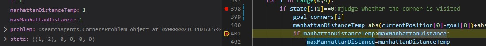
返回这些曼哈顿距离的最大值已经在刚才分析过，因为这样
最接近实际距离，所以可以展开更少的结点
另外，由于有可能一开始就是终点，也就是没有曼哈顿距离
可以被求，所以给曼哈顿距离赋初值0，以应对这一情况
其实也就是将默认情况统一合并在一起
如下图所示
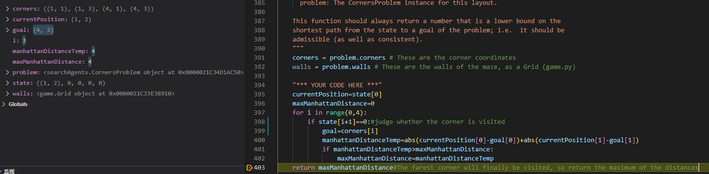
实验完成
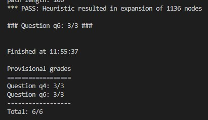Question 7
问题概述
问题7是一个新的类型的问题，要求吃到所有的豆子，
但是状态空间和问题5需要构建的初始化方法，展开结点方法，
判断目标方法和获取子结点方法已经写好，只需要完成
启发式函数的构建即可，与问题6类似，相当于进阶版
算法设计
与问题6类似，先分析启发式函数
分析这样的一个角落问题，我们先考虑启发式函数的要求：
(1)当前状态到目标状态代价的估计值实际到目标状态的代价
(2)当前状态到目标状态代价的估计值
采取任意操作的实际代价+下一状态到目标状态代价的估计值参考问题6，采用当前位置到所有未访问过的
角落的曼哈顿距离中最大的曼哈顿距离
符合(1)(2)
所以当前位置到所有未访问过的 角落的曼哈顿距离
中最大的曼哈顿距离估计比较接近实际距离
但是这种方式无法通过测试数据(分数只有3/4)需要考虑更优化的方法
再次思考想到可以使用相距最远的两个食物的曼哈顿距离
与当前位置到其中较近的一个食物的曼哈顿距离作为
预估代价，这样同样可以符合上面的要求
同时更接近实际代价，也通过了测试(分数有4/4)在后来阅读代码发现有提供mazeDistance方法
通过阅读明白，这种方法是先使用bfs走一遍，然后返回
代价，那么用这种方式获得的代价就是真实代价
所以是更优的一个策略，但是因为要多走一遍，会
多花费一些时间
算法实现
def foodHeuristic(state: Tuple[Tuple, List[List]], problem: FoodSearchProblem): position, foodGrid = state maxManhattanDistance=0 "*** YOUR CODE HERE ***" if len(foodGrid.asList())==0: return 0 maxMazeDistance=0 for food in foodGrid.asList(): tempMazeDistance=mazeDistance(position,food,problem.startingGameState) if tempMazeDistance>maxMazeDistance: maxMazeDistance=tempMazeDistance return maxMazeDistance
实验结果
实验调试
第一次使用最大曼哈顿距离的时候，最后一个测试节点
无法通过展开结点数过多，下图分别为代码和测试数据
通过新的思路解决了这个问题
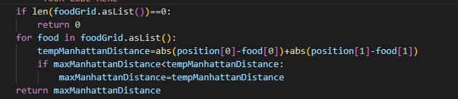
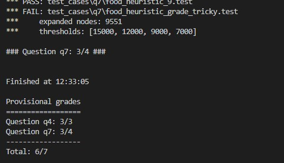
后来使用最远的两个食物的方法，通过了用例
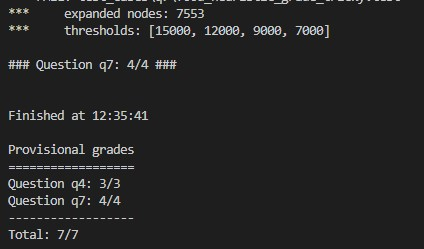
最后使用mazeDistance函数(也就是再用了一遍bfs)
完成了5/4
实验完成
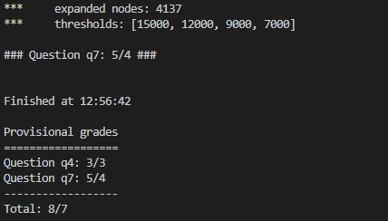Question 8
问题概述
问题8指出，虽然搜索算法配合很好的启发式函数
可以找到相对代价很小的路径，但是它无法通过所有点来找到
最短路径
本题需要使用一种搜索算法来完成对最近点的搜索(吃掉最近
的豆子)，并提示只需要很短的代码即可解决问题
算法设计
首先需要重新定义problem，如何每次都先去找到
距离最近的food呢？可以考虑使用bfs，因为bfs从状态所在
位置逐层扩散产生路径，距离最近的food一定最先被找到
算法实现
class ClosestDotSearchAgent(SearchAgent): "Search for all food using a sequence of searches" def registerInitialState(self, state): self.actions = [] currentState = state while(currentState.getFood().count() > 0): nextPathSegment = self.findPathToClosestDot(currentState) # The missing piece self.actions += nextPathSegment for action in nextPathSegment: legal = currentState.getLegalActions() if action not in legal: t = (str(action), str(currentState)) raise Exception('findPathToClosestDot returned an illegal move: %s!\n%s' % t) currentState = currentState.generateSuccessor(0, action) self.actionIndex = 0 print('Path found with cost %d.' % len(self.actions)) def findPathToClosestDot(self, gameState: pacman.GameState): # Here are some useful elements of the startState startPosition = gameState.getPacmanPosition() food = gameState.getFood() walls = gameState.getWalls() problem = AnyFoodSearchProblem(gameState) "*** YOUR CODE HERE ***" return search.bfs(problem) util.raiseNotDefined() class AnyFoodSearchProblem(PositionSearchProblem): def __init__(self, gameState): "Stores information from the gameState. You don't need to change this." # Store the food for later reference self.food = gameState.getFood() # Store info for the PositionSearchProblem (no need to change this) self.walls = gameState.getWalls() self.startState = gameState.getPacmanPosition() self.costFn = lambda x: 1 self._visited, self._visitedlist, self._expanded = {}, [], 0 # DO NOT CHANGE def isGoalState(self, state: Tuple[int, int]): x,y = state "*** YOUR CODE HERE ***" if (x,y) in self.food.asList(): return True return False util.raiseNotDefined()
实验结果
实验调试
考虑好解决方案后只用两行就可以完成代码的填充，所以一遍
就通过了测试，没有调试过程